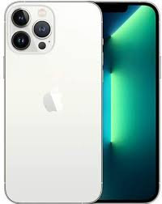
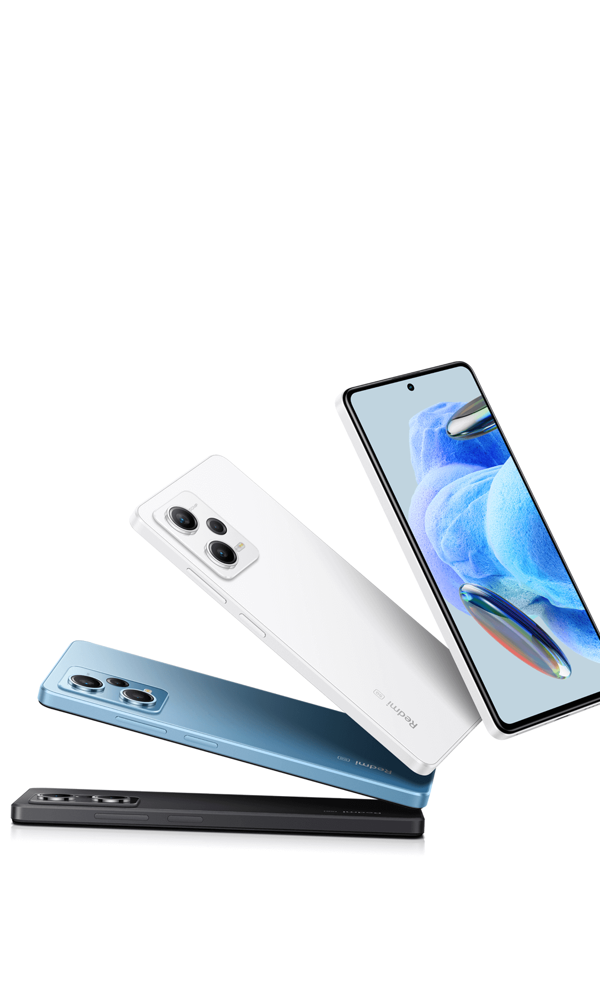

information on hi phones
top reytingdagi telefonlardagi eng soni yangilarlar faqt shuyerda
iphone 13 pro iphone 14 pro iphoned 14 pros 22 ultra s 23 ultra s 24 ultra
redmi note 12 pro redmi note 13 pro redmi note 14 pro

Apple iPhone haqida beshta fakt 07.09.2014, 20:02 Apple kompaniyasi 2007-yildan iPhone sotishni boshlagan va u bugungi kunda dunyodagi eng yirik kompaniyalardan biri hisoblanadi. CNN Apple iPhone haqida beshta ma’lumotni e'lon qildi. Bu haqda “Parol” nashri xabar berdi. Apple hozirgi kungacha 343 milliard dollar qiymatga ega iPhone smartfonlarini sotgan. Bu esa Apple mahsulotlari sotuvidan tushgan pulning yarmini tashkil etadi; Apple jami 551 million dona iPhone sotgan va buning yarmidan ko‘pi oxirgi bir yarim yil davomida sotilgan; Apple 2007-yildan hozirgacha iPhone bilan deyarli bir xil — 610 million dona iPad plansheti, iPod pleyeri va Mac kompyuterlarini sotgan; O‘tgan 12 oy davomida Apple’ning iPhone sotuvidan ko‘rgan daromadi Microsoft’ning barcha mahsulotlari sotuvidan tushgan daromaddan 13 foiz ko‘p. Bu davr mobaynida iPhone sotuvidan 97,8 milliard dollar daromad ko‘rilgan bo‘lsa, Microsoft barcha sotilgan mahsulotlaridan 86,8 milliard dollar daromad ko‘rgan;
iphone boyicha ma'lumotlarga otish
Eng yirik kompaniyalardan biri bo‘lgan “Samsung”- mobil va elektronika sohasida gigant kompaniyaga aylanib ulgurgan. 1938-yilda asos solingan kompaniya mana shu davrga qadar katta o‘zgarishlarni boshdan kechirdi, shuningdek, butun dunyo bozorlariga innovatsiyalarni olib kirgani holda ulkan burilishlarga sabab bo‘ldi. Kompaniya asoschisi Li Bying-chul kompaniyaning katta ahamiyat kasb etishiga ishonardi. “Samsung” nomi ham aynan shu maqsadni o‘zida aks ettirgan. Koreys tilida “Uch yulduz” ma’nosidagi brend nomi ushbu xalq madaniyatida katta, ulkan va qudratli kabi tushunchalar ramzi sanaladi. “Samsung”ning ishchilari soni 489 mingdan ziyod Balkim, bundan xabardorsiz, balkim yo‘q, lekin koreys korporatsiyasi faqatgina elektronika yoki mobil qurilmalar bilan cheklanib qolgan emas. Samsung Groupga qarashli listingi o‘tkazilmagan 59 ta va listing qilingan 19 ta kompaniya mavjud bo‘lib, ularning hammasi, asosan, Koreya fond birjasida savdo qiladi. Bular qatoriga qurilishdan tortib, moliya, kemasozlik va hattoki tibbiyot sohasiga ixtisoslashgan kompaniyalar ham kiradi. Yuqoridagi tarmoq korxonalari ishchilarining umumiy soni 80 ta mamlakat bo‘ylab 489,000 dan ortiq xodimlarni tashkil etadi.
Samsung boyicha ma'limotlar
Redmi – Xitoyning Xiaomi elektronika kompaniyasiga tegishli sub-brend. U byudjetli smartfon tarmogʻi sifatida Xiaomi tomonidan 2013-yil iyul oyida taqdim etildi. [1] 2019-yilga kelib Xiaomiʼning alohida sub-brendiga aylandi, u oʻrta darajali va sifati nisbatan past qurilmalarni oʻz ichiga oladi, Xiaomiʼning oʻzi esa yuqori darajadagi flagmani Mi turkumidagi qurilmalarga eʼtibor qaratadi. Redmi telefonlari Androidning oʻzgartirilgan varianti MIUI foydalanuvchi interfeysidan foydalanadi. Modellarni odatda 6" gacha bo'lgan displeyli sifati pastroq Redmi telefonlariga va 5" dan kattaroq displeyli Redmi Note seriyasining oʻrta va yuqori darajali qurilmalarga ajratish mumkin. Redmi A seriyali va Redmi Go seriyalari Osiyo va Evropaning bir qator mamlakatlari uchun ishlab chiqarilgan. Boshqa Xiaomi smartfonlaridan eng katta farq shundaki, ular arzonroq tarkibiy qismlardan foydalanadi va shuning uchun iqtisodiy jihatdan foydaliroq. 2014-yil avgust oyida The Wall Street Journal gazetasi 2014 yilining ikkinchi choragida Xiaomi Xitoyda smartfonlar etkazib berish reytingida 14 foiz bozor ulushiga ega ekanligini xabar qildi
Xiaomi boyicha ma'limotlar